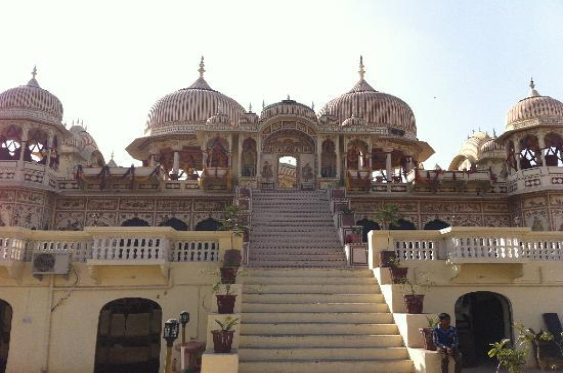

Karauli

Karauli, situated in Rajasthan, India, boasts a rich cultural tapestry with its stunning forts, temples, and palaces like the City Palace and Karauli City Palace. Its historical significance and architectural marvels make it a must-visit destination
months:For the best experience, plan your visit during the winter months from October to March when the weather is mild and ideal for sightseeing.One of the prominent attractions in Karauli is the City Palace, a majestic complex that reflects the grandeur of Rajput architecture. The palace boasts intricately carved balconies, courtyards, and frescoes, showcasing the craftsmanship of the artisans of yore. Within the palace complex, visitors can explore the Durbar Hall, temples, and gardens, providing a glimpse into the royal lifestyle of the past.
Another highlight of Karauli is the Kaila Devi Temple, dedicated to the goddess Kaila Devi. Situated atop a hill, the temple attracts devotees from far and wide, especially during the annual Navratri festival when it witnesses a large influx of pilgrims.
Narlai
Narlai is a charming village located in the Pali district of Rajasthan, India. Known for its picturesque surroundings, ancient temples, and stunning natural beauty, Narlai offers visitors a tranquil retreat away from the hustle and bustle of city life. The village is famous for the Narlai Hill, which is adorned with temples and offers panoramic views of the surrounding countryside.
months: The best time to visit Narlai is during the winter months, from October to March, when the weather is pleasant and ideal for outdoor activities and sightseeing.One of the main attractions in Narlai is the Narlai Stepwell, also known as the Ambika Mata Temple. This ancient stepwell, adorned with intricate carvings and sculptures, is dedicated to the goddess Ambika and serves as a significant religious and architectural landmark in the village. Visitors can admire the stunning architecture of the stepwell and learn about its historical significance.
Another notable feature of Narlai is the Narlai Fort, a majestic heritage property that has been converted into a luxury hotel.
Mandawa

Mandawa is a small town located in the Shekhawati region of Rajasthan, India. It is renowned for its beautifully preserved havelis (traditional mansions) adorned with intricate frescoes and paintings depicting scenes from Indian mythology, folklore, and daily life. Visitors to Mandawa can explore these architectural marvels, which serve as a testament to the region's rich cultural heritage.
months:The best time to visit Mandawa is during the winter months, from October to March, when the weather is cooler and more conducive to outdoor exploration.Visitors to Mandawa can explore the town's rich architectural heritage by taking leisurely walks through its narrow lanes and alleys, admiring the beautifully restored havelis that line the streets. Some of the notable havelis in Mandawa include the Goenka Double Haveli, Murmuria Haveli, and Jhunjhunwala Haveli, each boasting unique architectural features and historical significance.
In addition to its havelis, Mandawa is also home to several temples, forts, and cenotaphs, adding to its cultural and historical appeal. The Mandawa Fort, perched atop a hill overlooking the town, offers panoramic views of the surrounding countryside and serves as a reminder of Mandawa's princely past.